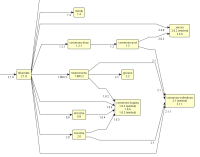
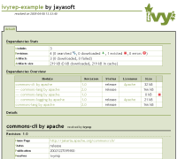

<p>Apache Ivy™ is a very powerful dependency manager oriented toward Java™ dependency management, although it can be used to manage dependencies of any kind.</p> <p>If you're unsure if you should use a dependency manager, or if you have general questions about Apache Ivy, consult the <a href="faq.html">FAQ</a> and the [[mailing-lists]].</p> <h1>Integrated with Apache Ant™</h1> <p>Apache Ivy is integrated with Apache Ant, the most popular Java build management system, so Apache Ivy follows Apache Ant design principles. If you have Apache Ant skills, you already have Apache Ivy skills! The plugin mechanism in Apache Ivy follows the Apache Ant model. Also like Apache Ant, Apache Ivy supports macrodefs and file imports from configuration.</p> <p>Since Apache Ivy is a subproject of Apache Ant, we even share the same development community!</p> <h1>Simple to use</h1> <p>For simple cases, Apache Ivy is easy to use. Declare your dependencies, and that's all. See the [[doc:tutorial/start quick start tutorial]] to check yourself, it should take less than 5 minutes!</p> <p>Apache Ivy brings the dependency management advantages of Apache Maven™ to Apache Ant build files, for those who already use Apache Ant and don't want to migrate to Apache Maven. But Apache Ivy does not stop there, it provides many more great features!</p> <h1>Clean dependency reports</h1> <p>Apache Ivy produces two primary report types: HTML reports and graph reports. HTML reports give a good understanding of what Apache Ivy did, and of a project's immediate dependencies. The graph reports provide a good overview of a project's transitive dependencies (see below) and conflicts.</p> <p>Here are some sample Apache Ivy reports:<br /> <center><br /> <a href="history/latest-milestone/samples/ivy-sample-xslt.xml"></a> <a href="images/hibgraph.png" alt="ivyfile"></a> <a href="history/latest-milestone/samples/jayasoft-ivyrep-example-default.html" alt="graph"></a><br /> </center></p> <h1>Non intrusive</h1> <p>Apache Ivy is most commonly used to resolve dependencies and copy them to the lib directory of a project. After dependencies have been copied, a build no longer depends on Apache Ivy. Therefore, existing builds may easily be migrated to Apache Ivy using the lib directory pattern. Also, dependencies can be delivered with a project so that the build file need not depend on Apache Ivy.</p> <h1>Extremely flexible</h1> <p>In most cases, Apache Ivy will conform to your existing environment.</p> <p>Apache Ivy comes with many default values that work out of the box, and most can be changed. For example, you can change the way Apache Ivy finds the latest dependency versions, you can change the conflict manager, you can choose if you want Apache Ivy to copy dependencies to your project libs or use them directly from the cache, etc.</p> <h1>Easily extensible</h1> <p>When Apache Ivy does not do what you want out of the box, you can often extend it to solve your problem. For instance, you can plug your own repository. But you can also define your own latest strategy and your own conflict manager. See [[doc:extend how to extend Ivy]] in the reference doc. </p> <p>You can even define your own metadata on your modules, with [[doc:concept extra attributes]].</p> <h1>High performance</h1> <p>The Apache Ivy project has always emphasized performance. For example, Apache Ivy uses a cache to avoid duplicate dependency downloads. Also, all settings and ivy files are parsed using SAX for maximum performance.</p> <h1>Transitive dependencies</h1> <p>Imagine a component that's often reused by a software team, and that this component has dependencies of its own. Without a good dependency management tool, each time this component is reused, all its dependencies must be repeated. With Apache Ivy, it's different: simply write a dependency file once for the component, and benefit from the work already done anytime this component is reused.</p> <p>This model is even more powerful as the component's own dependencies change over time. In this case, without Apache Ivy, the resulting ripple effect can disrupt your project. With Apache Ivy, you update the ivy file of the component and that's it!</p> <h1>Strong conflict management</h1> <p>Transitive dependencies can cause confusion over exactly which version of a dependency gets bundled, because several modules require it in different versions. Apache Ivy provides a strong and flexible conflict management engine, which allows choosing the version to be evicted or kept in each case.</p> <p>Apache Ivy also implements transitive dependencies management, which means that conflicts are solved for each dependency before being solved for your whole module. This ensures that problematic conflicts will only need to be solved in the dependency where they are encountered.</p> <h1>Out of the box maven repository support</h1> <p>The public maven repository has many advantages: a lot of modules available, easy search with mvnrepository.com, etc. With Apache Ivy, you benefit from this repository out of the box thanks to maven2 metadata compatibility. </p> <h1>Continuous Integration Ready</h1> <p>Are you working in a continuous integration (CI) environment? No? You should be ;-)</p> <p>If you are working in a CI environment, and if you have many projects that depend one on each other, then you might be experiencing the dependency management nightmare. Fortunately, Apache Ivy can help you!</p> <p>With Apache Ivy you can declare that a component depends on the latest version of another component. Knowing that, Apache Ivy will search for the latest version of the dependency whenever you ask it to do so. This latest version is computed either by checking the date of the dependency versions or by comparing versions as text (either lexicographically or with an algorithm close to the one used in php version_compare function).</p> <h1>Publication handling</h1> <p>Apache Ivy helps you publish your projects to your repository. This simplifies the management of multi-project environments.</p> <h1>Pluggable module descriptor parsers</h1> <p>Apache Ivy is able to use ivy-files as module descriptors, but also maven2 POMs, or even your own module descriptors! This can help you move softly from an existing repository of modules to an Ivy-managed one.</p> <h1>Unique enterprise features</h1> <p>Apache Ivy is the only dependency management tool to support powerful features such as repository namespace and building through the install task. A [[doc:tutorial/build-repository tutorial]] is dedicated to this feature which shows how to build your own repository by importing data from a public one, and how to convert heterogeneous repositories into a stable and homogeneous one.</p> <h1>Heavily tested</h1> <p>Apache Ivy benefits from a lot of unit tests checked at each code modification. It is also heavily tested by the community itself, and we pay a lot of attention to bug fixing and code stability.</p> <h1>Free and open source</h1> <p>Apache Ivy is an Apache project, which means that it's fully open sourced, with a business-friendly Apache license.</p> <p>Since it's open source, you can even modify it for your own needs, and let the community benefit from your enhancements if you like.</p> <h1>Extensively documented</h1> <p>Not only is Apache Ivy free and open source, but you also have access to very detailed tutorial and reference documentation.</p> <h1>Self contained</h1> <p>The core engine which enables most Apache Ivy features is provided as a single jar with no dependency other than JRE 1.4 or greater. This means that you can very easily use Apache Ivy to bootstrap your build system, or to embed in your own tool. Apache Ant support is provided only as a thin wrapper over the Apache Ivy engine so that you can do everything in embedded or standalone mode.</p>